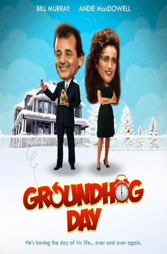

<DOTYPE! html>
<html>
	<head>
		<title> Dzień świstaka (Groundhog Day) (1993) </title>
		<meta charset="utf-8">
		<link rel="stylesheet" type="text/css" href="baby.css">
	</head>
	<body>
		<div class="red"> Dzień świstaka (Groundhog Day) (1993) </div class="red">
		<div class="orange"> Phil, prezenter telewizyjnej prognozy pogody, przyjeżdża do małego miasteczka, by zrelacjonować Dzień Świstaka. Następnego ranka stwierdza, że wciąż jest ten sam dzień. <a href="https://www.filmweb.pl/film/Dzie%C5%84+%C5%9Bwistaka-1993-5293"> Czytaj więcej... </a> 
			<br> <br> <table>
				<tr> <td><b>Postać</b><td> <td><b>Aktor<b/></td> </tr>
				<tr> <td> Phil </td> <td> Bill Murray </td> </tr>
				<tr> <td> Rita </td> <td> Andie MacDowell </td> </tr>
				<tr> <td> Larry </td> <td> Chris Elliott </td> </tr>
				<tr> <td> Ned </td> <td> Stephen Tobolowsky </td> </tr>
				<tr> <td> Buster </td> <td> Brian Doyle-Murray </td> </tr>
				<tr> <td> Nancy </td> <td> Marita Geraghty </td> </tr>
				<tr> <td> Ralph </td> <td> Rick Overton </td> </tr>
				<tr> <td> Gus </td> <td> Rick Ducommun </td> </tr>
			</table>
			<div class="white"> <br>
				Czy oglądałeś/aś ten film? <br>
				<input type="radio" id="y" name="watch">
  				<label for="y"> tak </label>
				<input type="radio" id="n" name="watch">
  				<label for="n"> nie </label> <br>
				Jeśli tak, czy podobał Ci się? <br>
				<input type="radio" id="ye" name="like">
  				<label for="ye"> tak </label>
				<input type="radio" id="no" name="like">
  				<label for="no"> nie </label> <br>
				<button type="button" onclick="alert('Dziękuję za wypełnienie!')"> Wyślij </button>
			</div class="white">
		</div class="orange">
		<div class="yellow">  </div class="yellow">
		<div class="footer"> autor: Kacper Szczęsnowicz kl. 2TA </div class="footer">
	</body>
</html>